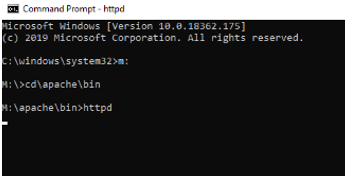
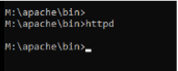
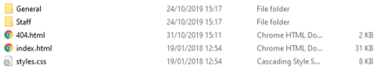
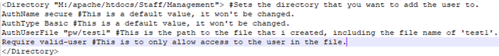
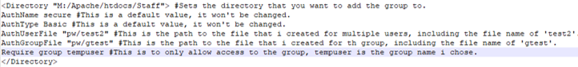
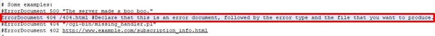
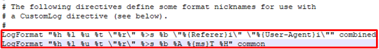
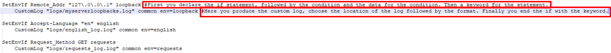

Setting up Apache First Setup NOTE: For the purposes of this set up I will be using the M drive but the usual will most likely be the C drive. When setting up apache you need to first gain the correct files. There should be access to the apache web server files here that come in a zipped folder. Once you have access to these, you will be able save them somewhere in your preferred drive. Once saved, navigate to the root directory (the apache folder) and find the conf folder. Inside that folder you will find a file called httpd.conf. Open this file in your preferred text editor. (NOTE: If asked to ‘always use this application for this type of file’, choose no) Now, inside the file there are some changes that I had to make in order to run the server. You may not have to make these changes, but I will show them to give an idea of what this file can do. Firstly, find the Define SRVROOT line of the file, this defines where you have put the apache files. As previously mentioned, I have changed the root drive of my directories but yours could still be there default of “c:/apache”. If not, then change this path inside the quotes. (NOTE: Unlike windows, apache is a linux based system which means it uses / instead of \ for paths on the drive.) Now that this is defined, most users will be able to move on and run apache now, although if you want to produce your own web pages be sure to head into the htdocs folder and add your desired files. Everything in this folder is what is shown front-end. (NOTE: This next part is only really necessary to those that are already running on a server as the default port of 80 will already be in use). The change for this is simple, locate the Listen 80 and change this to something else, such as 8080, this will allow apache to run on a port on its own. Starting and Stopping Apache To Start Apache: First thing you must do, once your command line is open, is set your directory. As previously said, in my case this is M. So I type: M: *press enter* (This sets the correct drive) cd\apache\bin *press enter* (This sets the correct folder) httpd *press enter* (This runs apache)  When apache is running, head to any browser and type in localhost or localhost:8080, depending on if you changed the port. This will take you straight to your index page. To stop apache: *Press ctrl (control) and C together* (NOTE: This may take a couple attempts for it to fully take effect).  Apache's Directories The following is a list of useful directories given by apache, I have also included any user made ones that could be useful and isn’t supplied by apache. Bin – This folder is full of executable files that can help you implement useful features into your server, the most useful of which is the one that actually runs the server, httpd.exe. conf – The config folder contains many files that can be used to configure almost anything within the apache server. The most commonly used file is the httpd.conf file, this will be where you go to change pretty much anything you want within the server, such as; root directory, port, where logs are stored, users, groups and more. htdocs – This directory is where you produce your site/web content. Any front or back end material should be placed here as no other directory will be used to do this, unless changed by the user within the config files. Logs – The log folder gives the feedback from the server, whether it be feedback that the server is working and has made secure connections or instead returns errors. If anything fails, it is best practice to head to the error logs to figure out why. New log files can also be created here if the user wants any custom logs produced. pw – Now this folder is user made, it is very handy when you want to store the users and their passwords. The users allow access to certain areas of the site and can separate standard users from staff/admin. Storing the passwords in a separate folder just makes them slightly more secure. Securing Apache Users Securing the server means adding authentication to users before they can access certain areas. This is done by making users or groups (a group of users that have the same access). It is best to first create the folder structure within htdocs to determine who will have access to which section.  Here I have created separate folders, each with different web content in them. From here we can start creating our users. Head to your command prompt and navigate to the bin folder once again, but this time don’t run apache. Instead type, htpasswd -c *filename* *username* *Press Enter* To break this down, htpasswd is the executable file we’re calling to run the command. -c creates the file (NOTE: You can leave this out if you want to add to an existing file.). Then filename and username are simply what you want to call the file and the user. You will then be asked to create a password, this will be entered twice to ensure the correct password. Now what you want to do is move this newly created file from the bin folder, to a new folder within the root directory, such as pw. Now in order to secure this as a user, you must head to the httpd.conf file and head to any space after a Directory tag has been created and add your own. It should be structured as follows:  This officially sets up the user. Groups Groups allow many users to be placed within one file, this makes giving access to many users a lot simpler. It also means that whenever a new user is added, it can be added directly to the group file. To set up a group you must first create a group file yourself, call this a useful name and make it a standard file. This will be stored in the new pw folder. Coming back to that file later, you must next create some more users! Grab the original user file and move it back to the bin folder and run the htpasswd *filename* *username*, notice I didn’t include -c, this is because we want multiple users here. Be sure to choose a different username to the previous. Now move this file back to the pw folder and open the group file, in here we must call the users we want. Type *groupname*:*username* *username*, this creates the file and includes the users. Finally, you want to call this file from the config. Open up httpd.conf and head to where the user was created previously. Now make a new directory tag and do as follows:  The groups are now created. Common HTML Codes Some common HTML codes include: 200 – This code means OK, as in there have been no issues. 500 – Internal Server Error. This is produced when there has been an issue server-side. 404 – Resource not Found. This is produced when then has been a request for a certain resource that does not exist. 403 – Forbidden. This code is not as common but is produced when access is strictly not allowed. 401 – Unauthorised. This is produced when you are not allowed to access that web page under the current login/user. Local Redirect Error Documents This allows you to customise what is produced to the site when a certain error is thrown, in this example I will use a 404 error, but any code can be used here. First off you want to make sure that you have a web page created that matches your house style and includes information on what the error produced was and useful links to get back to the site if need be. Open the httpd.conf file and scroll until your find ErrorDocument. Add or change a line here to represent what you want to produce; my example is as follows:  Logs Log File Types The default and any Custom-made log files can be found within the logs folder. How to create custom logs will be described in the next section. The default logs found in this folder are your: install.log access.log error.log Install is only produced the first time you run apache. Access gives you information on connections made to the server and tells you if the connection was successful, what pages were accessed, what IP address it was access by etc. Finally, the error log gives information on the errors that were produced by the server, this information given is what caused the error, time stamps etc. Log File Formats There are a couple of default log formats given by apache, but these can be changed depending on what you want to produce. The defaults logs are Common and Combined and are both used by apache to produce their own log files. The format is as follows, along with a link to some useful format codes to potentially add:  List of Log Format Options As for the default options, here is what each one does: %h - The remote hostname: IP Address of the request. %l - Remote logname: This will often produce a simple dash unless the id is present. %u - Remote User: If request was authenticated then user is returned. %t - Time: The time the request was recieved. %r - Request: The first line/type of request. %s - Status: The status of the request. ALternatively, %>s gives you the final status. %b - Bytes: Size of te response in bytes. %A - IP: The local IP Address. %H - The request Protocol. Conditional Logging Conditional logging is just as it sounds, you log information based something. This can be based on language, remote IP address, html code etc. In order to start out a condition log you must access the httpd.conf file and head to the IfModule log_config_module tag. Then underneath the default log formats you can start your conditional logging. The following image shows the implementation of the if statements, I have chosen 3 conditions; First is based on access gained from the localhost, second is English logs and third is any GET method produced.  Log File Rotation Log file rotation enables the creation of new log files after a certain amount of time or based on log file size. The format for how to create a rotating log file is as follows . This can be changed around with different formats, like mentioned before. Here are some useful tags to add to a filename of a rotated log and define the condition of the rotation: %A full weekday name %a 3-character weekday name %B full month name %d 2-digit day of month %H 2-digit hour (24 hour clock) %I 2-digit hour (12 hour clock) %j 3-digit day of year %M 2-digit minute %m 2-digit month %S 2-digit second %Y 4-digit year %p am/pm of 12 hour clock (localized) %y 2-digit year Adding Web Content As previously mentioned, any web content can be added to apache through the htdocs folder. When setting up apache I simply added some static content to give an idea on how adding this works and to test that apache was running as intended. Once I had configured apache to how I wanted, I then implemented a more dynamic feel to the server through the user of AJAX (Asynchronous JavaScript and XML), as stated in the name AJAX used JavaScript and XML to allow changes within a page. The most commonly used feature of AJAX is allowing for the ability to update part(s) of a web page without refreshing the whole page. This is beneficial in many ways. More user friendly as if there are many changes happening to a web page through the use of AJAX, having the page fully refresh every time can cause frustration to a user. Saves on bandwidth by reducing the amount of calls made to the server. Allows for dynamic content to aid in producing relevant/valid content. Is regarded as a web standard by W3C which makes it a fully supported implementation. Click here to see AJAX in action!